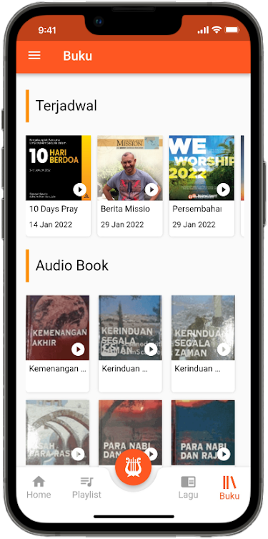
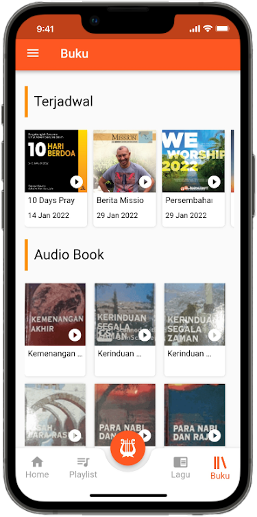
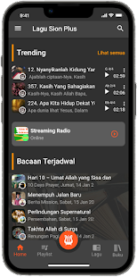
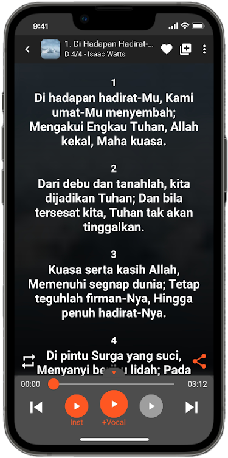
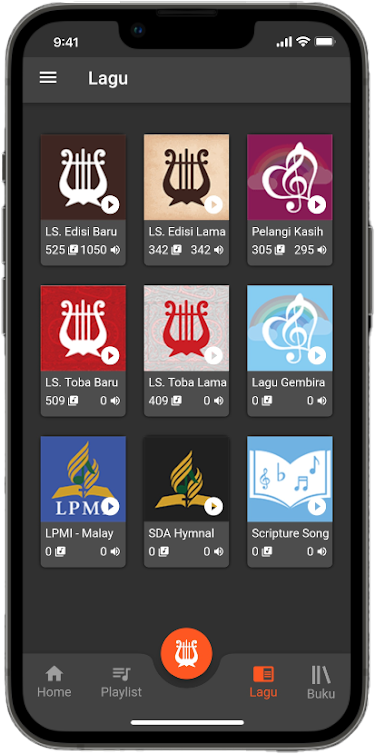
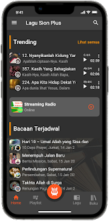
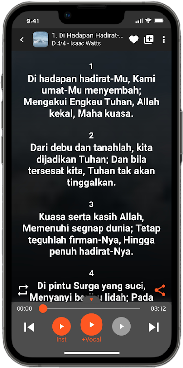
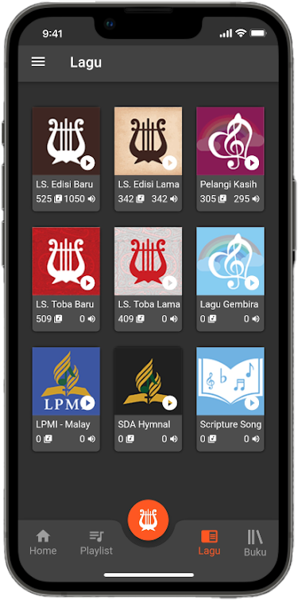

Pujilah Tuhan Hai Jiwaku.
Biarlah segala yang bernafas memuji Tuhan, Haleluya! - Mazmur 150:6


"Kami menyadari keterbatasan kami dalam banyak hal yang menyebabkan Aplikasi ini belum bisa sempurna, baik dalam hal fungsi maupun isi. Kami sangat mengharapkan saran yang membangun dari para pengguna agar aplikasi ini dapat digunakan sebesar-besarnya untuk kemuliaan Tuhan."

Tersedia banyak buku lagu yang dapat dipilih, LS. Edisi Baru, LS. Edisi Lama, Pelangi Kasih, dll. (beberapa masih dalam tahap penambahan).

Terdapat play instrumen dan play audio vocal, kami juga menyediakan cord hasil scan (tab 2x untuk masuk ke lirik chord).

Kami juga menyediakan buku bacaan yang juga memiliki audio vocal yang dapat diputar, mulai dari Renungan Pagi, Sekolah Sabat, Bacaan Mission, dll.

Anda dapat mengunduh lagu-lagu yang tersedia di aplikasi lagu sion plus ini, dan memainkannya secara offline.
 

Perhatikan logo aplikasi dibawah ini
Bisa, kami menyediakan versi web untuk ibadah online maupun offline, dengan tampilan presentasi layar penuh. Anda hanya perlu masuk ke https://play.lagusion.org/
Kami mendukung versi Android mulai dari versi 5.0 keatas.
Anda hanya perlu melakukan tab 2x pada lirik lagu yang tampil. (untuk sekarang partitur hanya tersedia pada LS. Edisi Baru)
Bisa, masuk ke bagian setting yang terdapat pada sudut kanan atas lirik berbentuk titik 3.
 




